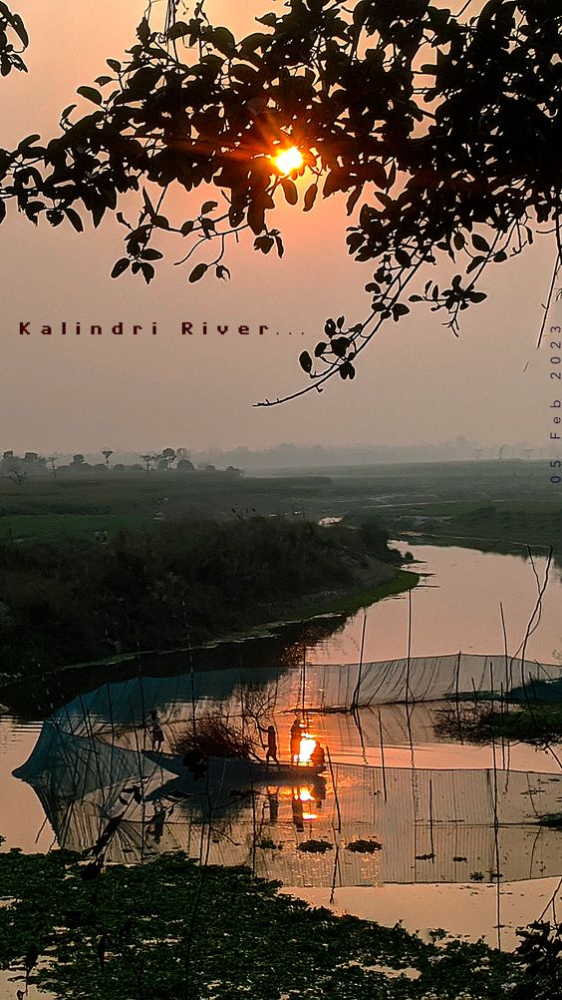
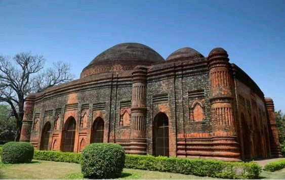

About Malda
Malda, situated in the northern part of West Bengal, holds cultural importance due to its historical heritage and diverse cultural influences. The district has a rich history dating back to ancient times, and it was an important center for trade and commerce during various historical periods. The region's cultural significance is reflected in its architectural landmarks, including the Adina Mosque and the Firoz Minar. Malda is also known for its unique folk music and dance forms, adding to its cultural vibrancy.

